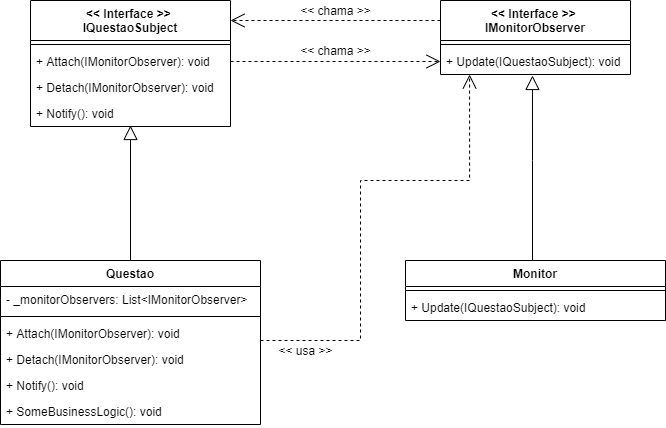
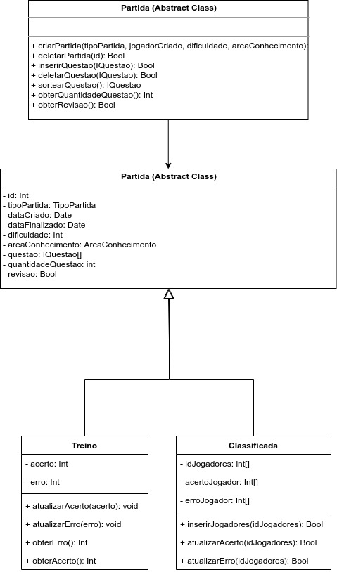

GOF's Comportamentais
Histórico de Versões
| Data | Versão | Descrição | Autor(es) |
|---|---|---|---|
| 24/10/2020 | 0.1 | Adicionado o documento | Julio Litwin |
| 25/10/2020 | 0.2 | Adicionado padrão Mediator de Partida | Lucas Gomes, Julio Litwin |
| 26/10/2020 | 0.3 | Refatorando padrão Mediator | João Pedro, Lucas Gomes |
| 26/10/2020 | 0.4 | Adicionado padrão Observer | Lucas Gomes |
| 26/10/2020 | 0.5 | Adicionado padrão State | Julio Litwin |
| 26/10/2020 | 0.6 | Adicionado padrão Template Method | Guilherme Leal |
| 26/10/2020 | 0.7 | Adicionado padrão Command | Julio Litwin |
Introdução
Os Padrões Comportamentais atuam sobre como responsabilidades são atribuídas as entidades, ou seja, qual o comportamento das entidades. Estes padrões facilitam a comunicação entre os objetos, distribuindo as responsabilidades e definindo a comunicação interna.
State
O State é um padrão de projeto comportamental que permite que um objeto altere seu comportamento quando seu estado interno muda. Parece como se o objeto mudasse de classe.
A ideia principal é que, em qualquer dado momento, há um número finito de estados que um programa possa estar. Dentro de qualquer estado único, o programa se comporta de forma diferente, e o programa pode ser trocado de um estado para outro instantaneamente. Contudo, dependendo do estado atual, o programa pode ou não trocar para outros estados. Essas regras de troca, chamadas transições, também são finitas e pré determinadas.
Aplicabilidade
Foi adicionado no back a classe de FSM, na qual irá gerenciar todo o state do Jogador. Atualmente há o FSM do JogadorFSM. Na qual ele irá verificar atual State do Jogador e será processado a partir do momento na qual se encontra.
Tal como: Quando o jogador estiver no State de PLAYING por exemplo, será processado o tempo de partida, questões sendo processadas e dentre outros, agora por exemplo quando estiver apenas no State de CONNECTED, não há necessidade de processamento, além de verificação se o jogador ainda persiste online.
Mediator
Este padrão tem como objetivo reduzir o acoplamento entre os objetos de um programa. Assim, restringe a comunicação direta entre os objetos, permitindo-os se comunicarem de forma indireta via um objeto mediador.
Os objetos serão registrados no objeto mediador e qualquer ação que fizerem, haverá a notificação de todos os objetos registrados.
Esse padrão facilitará a implementação do projeto pela facilidade de ocorrer uma ação (jogador responder uma questão) e o mediador (partida) notificar o outro jogador presente na partida, caso tenha.
Para realizar a implementação foi utilizado algumas idéias do padrão Observer, como o subject notificar os observer e acontecer um update logo em seguida. Na implementação a partida notificará o jogador e assim este poderá reagir a notificação.
Problema: Como permitir que um grupo de objetos de Jogador se comunique entre si sem que haja acomplamento entre eles?
Solução: Introduzir uma classe que encapsule a comunicação (cada objeto participante conhece o mediador mas ignora a existência dos outros objetos).
Mediator para Partida
Diagrama representando o padrão no projeto
- Versão 0

Links para o código implementado
Observer
É um padrão que tem como objetivo principal notificar objetos que se anexaram ao subject quando ocorrer um evento interno. Assim, quando ocorre qualquer evento no objeto que estão observando, todos os objetos que estão anexados ao subject serão notificados. Com este padrão, é possível criar uma relação de um para muitos entre o subject e os observers anexados.
Neste padrão, Subject é o objeto que será observado e Observer é o objeto que será anexado ao Subject e receberá as notificações.
Problema: Ao criar uma Questão, como o Monitor será notificado quando acontecer qualquer alteração no estado da Questão, caso tenha sido aprovada ou reprovada?
Solução: Implementar uma classe do Monitor capaz de observar qualquer alteração no estado da Questão.
Observer para Questão e Monitor
Diagrama representando o padrão no projeto
- Versão 0

Links para o código implementado
Template Method
O Template Method é um padrão de projeto comportamental que define o esqueleto de um algoritmo na superclasse mas deixa as subclasses sobrescreverem etapas específicas do algoritmo sem modificar sua estrutura.
Problema: Em algum momento você percebeu que algumas classes tem muito código parecido. Embora o código para lidar com vários formatos seja inteiramente diferente em todas as classes, o código para processamento de dados e análise é quase idêntico. Esse padrão foi observado para diferentes tipos de partidas que podem existir no nosso sistema.
Solução: O padrão do Template Method sugere que você quebre um algoritmo em uma série de etapas, transforme essas etapas em métodos, e coloque uma série de chamadas para esses métodos dentro de um único método padrão. As etapas podem ser tanto abstratas, ou ter alguma implementação padrão. Para usar o algoritmo, o cliente deve fornecer sua própria subclasse, implementar todas as etapas abstratas, e sobrescrever algumas das opcionais se necessário (mas não o próprio método padrão).

Observação: Em desenvolvimento a Implementação que exemplifica o Template Method.
Command
O Command é um padrão de projeto comportamental que transforma um pedido em um objeto independente que contém toda a informação sobre o pedido. Essa transformação permite que você parametrize métodos com diferentes pedidos, atrase ou coloque a execução do pedido em uma fila, e suporte operações que não podem ser feitas.
Prós
- Princípio de responsabilidade única. Você pode desacoplar classes que invocam operações de classes que fazem essas operações.
- Princípio aberto/fechado. Você pode introduzir novos comandos na aplicação sem quebrar o código cliente existente.
- Você pode implementar desfazer/refazer.
- Você pode implementar a execução adiada de operações.
- Você pode montar um conjunto de comandos simples em um complexo.
Contras
- O código pode ficar mais complicado uma vez que você está introduzindo uma nova camada entre remetentes e destinatários.
Aplicabilidade
Em desenvolvimento em dois pontos do projeto. Será implementado na estrutura de Banco de Dados e na parte de Networking.
Em ambos, será feito uma requisição para uma Fila, onde será mantida a requisição e futuramente processada e caso necessário, será retornado o valor, caso haja.
Sendo assim, em ambas partes nas quais serão utilizadas, entre todos os prós, a maior vantagem é poder evitar o deadlock e/ou race conditions entre as threads, logo se tornando seguro para os processamento das requisições.
Referências
-
Brizeno, Classificação dos Padrões de Projeto GoF. Disponível em: https://brizeno.wordpress.com/2011/12/12/classificacao-dos-padroes-de-projeto-gof/. Acesso em: 24 de Setembro 2020.
-
TreinaWeb, Padrões de projeto: o que são e o que resolvem. Disponível em: https://www.treinaweb.com.br/blog/padroes-de-projeto-o-que-sao-e-o-que-resolvem/. Acesso em: 24 de Setembro 2020.
-
Wikipedia, Padrão de projeto de software. Disponível em: https://pt.wikipedia.org/wiki/Padr%C3%A3o_de_projeto_de_software. Acesso em: 24 de Setembro 2020.
-
Template Method, Padrão Comportamental Template Method. Disponível em: https://refactoring.guru/pt-br/design-patterns/template-method. Acesso em 26/10/2020.
-
Material complementar da disciplina Arquitetura e Desenho de Software. VideoAula 10a - Vídeo-Aula - DSW - GoFs - Comportamentais. Professora Milene Serrano. Universidade de Brasília.
-
Material complementar da disciplina Arquitetura e Desenho de Software. VideoAula 10d - Vídeo-Aula - DSW - GoFs - Comportamentais - Demais Padrões - Visão Rápida. Professora Milene Serrano. Universidade de Brasília.